05 / 사용 방법
그 밖의 기능
대상자·기사·운영 일정과 기록을 관리하는 기능입니다. 필요한 항목으로 바로 이동하세요.
더보기 메뉴에서 찾기

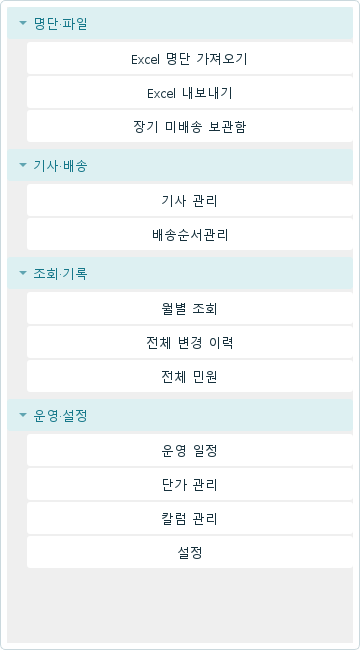
| 분류 | 메뉴 · 누르면 설명으로 이동 | 쓰는 때 |
|---|---|---|
| 명단·파일 | 명단 불러오기 | 새 명단을 넣거나 기존 명단을 업데이트할 때 |
| 명단·파일 | Excel 내보내기 | 현재 시트 또는 전체 명단·이력을 Excel로 저장할 때 |
| 명단·파일 | 장기 미배송 보관함 | 오랫동안 배송하지 않은 대상자를 확인할 때 |
| 기사·배송 | 기사 관리 | 기사 등록·연락처·표시 순서를 수정하거나 배정을 일괄 교체할 때 |
| 기사·배송 | 배송순서관리 | 기사별 배송 경로 순서를 바꿀 때 |
| 조회·기록 | 월별 조회 | 월별 식수와 식종 변경 기록을 확인할 때 |
| 조회·기록 | 전체 변경 이력 | 저장 기록을 찾거나 이전 자료로 되돌리고 별도 작업본을 만들 때 |
| 조회·기록 | 전체 민원 | 명단 전체의 민원을 찾아볼 때 |
| 운영·설정 | 운영 일정 | 학교 중식 일정과 휴무·공휴일을 정할 때 |
| 운영·설정 | 단가 관리 | 식종별 청구 단가와 적용일을 바꿀 때 |
| 운영·설정 | 칼럼 관리 | 칼럼 표시·숨김, 사용자 항목과 가구 공용을 설정할 때 |
| 운영·설정 | 설정 | 문서·배송·식수·화면·데이터 관리을 설정할 때 |
대상자 추가·정보 수정
여는 위치 · 명단 오른쪽 위 → 신규 대상자 등록

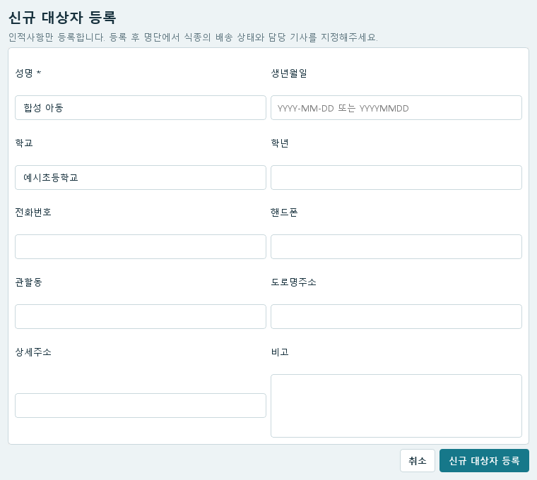
- 신규 대상자 등록을 누르고 성명·학교·연락처·주소 등 필요한 값을 입력합니다.
- 신규 대상자 등록을 눌러 인적사항을 저장합니다. 이 단계에서는 식종 가입이나 배송담당을 지정하지 않습니다.
- 명단에서 추가한 사람을 찾아 인적사항을 확인합니다. 배송을 시작하려면 해당 식종 칸을 우클릭해 배송을 선택하고 시작일·접수 경로 등을 입력합니다. 담당 기사는 배송 배정에서 지정합니다.
기존 가구와의 연결은 저장된 가구 묶기 기준을 사용합니다. 별도 기준이 없으면 핸드폰을 기준으로 합니다. 공용값이 다르다는 창이 나오면 항목별 값을 확인하고 입력을 고치거나 예외를 선택합니다.
기존 대상자의 연락처·학교·비고는 명단 셀을 더블클릭하거나 오른쪽 정보 수정에서 고칩니다. 배송을 중단할 때는 행 삭제 대신 해당 식종의 중지를 사용합니다.
여러 셀을 한 번에 바꾸기
여는 위치 · 명단에서 셀 선택 → 우클릭 → 선택 셀 일괄 변경
- 바꿀 셀을 마우스로 드래그하거나 Ctrl·Shift를 눌러 여러 개 선택합니다. 선택한 셀 위에서 마우스 오른쪽 버튼을 누르고 선택 셀 일괄 변경 · N개를 누릅니다.
- 찾아 바꾸기 또는 같은 값으로 채우기를 고릅니다. 찾아 바꾸기는 완전 일치와 부분 일치를 선택할 수 있습니다. 완전 일치는 셀 전체가 같은 값일 때, 부분 일치는 셀 안의 해당 글자만 바꿉니다.
- 찾을 내용과 바꿀 내용을 입력합니다. 완전 일치에서 찾을 내용을 비우면 빈 셀을 찾습니다. 바꿀 내용을 비우면 찾은 값이나 채울 셀의 값을 지웁니다.
- 변경 미리보기를 눌러 성명·칼럼·변경 전·변경 후를 확인한 뒤 변경 저장을 누릅니다. 입력을 바꾸면 다시 미리보기를 눌러야 합니다.
완전 일치와 부분 일치의 차이
찾을 내용을 분당초, 바꿀 내용을 분당초등학교로 입력한 예입니다.
| 기존 셀 값 | 완전 일치 | 부분 일치 |
|---|---|---|
| 분당초 | 분당초등학교 | 분당초등학교 |
| 분당초 3학년 | 변경 없음 | 분당초등학교 3학년 |
대소문자와 공백을 구분하며, 부분 일치는 셀 안에서 일치하는 모든 부분을 바꿉니다. 부분 일치에서는 찾을 내용을 비울 수 없습니다. 같은 값으로 채우기는 찾을 내용과 관계없이 선택한 셀 전체를 입력한 값으로 채웁니다.

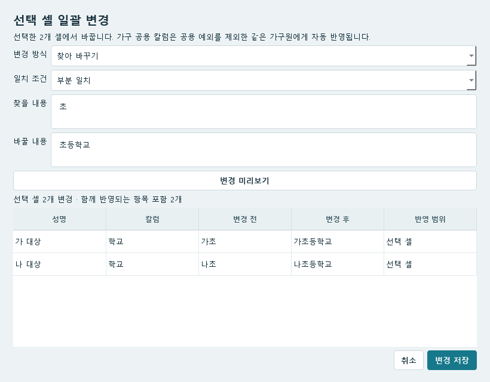
숫자·날짜·선택 목록·칼럼 입력 제한을 검사합니다. 잘못된 값이나 서로 다른 가구 공용 값이 있으면 모두 저장하지 않으므로 내용을 고쳐 다시 미리보세요. 변경은 한 번의 이력과 자동 백업으로 저장합니다. 취소하거나 바뀌는 값이 없으면 기존 명단을 유지합니다.
잘못 등록한 대상자 삭제
- 대상자의 이름·학교·연락처를 확인합니다.
- 그 사람의 셀을 우클릭해 명단 행 삭제를 선택합니다.
- 확인창에서 삭제할 사람이 맞는지 읽고 삭제를 누릅니다. 잘못 선택했으면 취소합니다.
정보 수정에서 기존 값이 있는 칸을 비우면 삭제 예정 안내와 최종 확인을 거칩니다. 반면 명단 불러오기의 빈칸은 기존 값을 유지합니다.
개인별 배송요일·형태 변경
여는 위치 · 대상자 선택 → 오른쪽 배송 설정

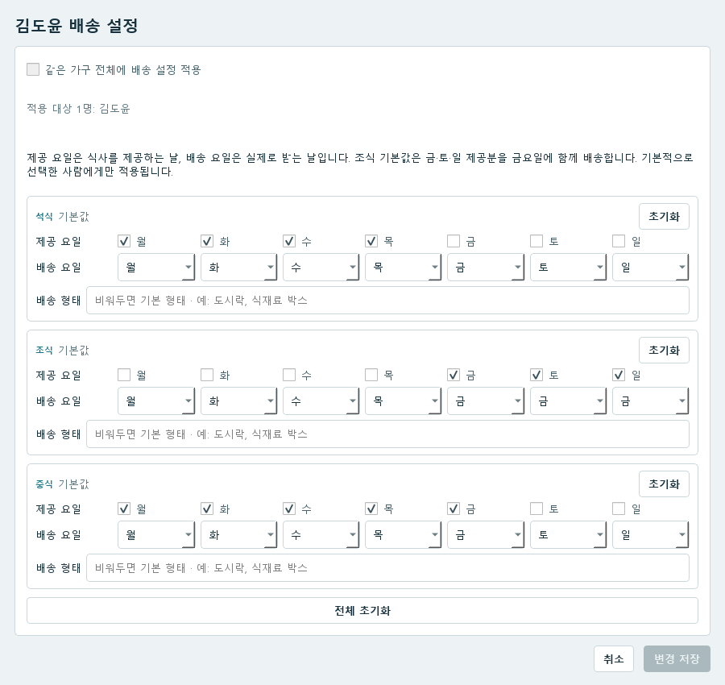
- 설정할 식종에서 식사를 제공할 요일과 실제 배송할 요일을 확인합니다.
- 필요한 요일·배송 형태를 바꿉니다. 예: 조식 금·토·일분을 금요일에 묶어 배송. 배송 형태는 기존 항목을 선택하거나 직접 입력할 수 있습니다. 새 형태를 추가하려면 입력칸에 BOX처럼 원하는 이름을 입력합니다. 기본 형태로 되돌리려면 배송 형태 입력칸을 비웁니다.
- 같은 가구 전체를 바꿀 때만 같은 가구 전체에 배송 설정 적용을 체크합니다.
- 변경 저장을 누릅니다. 명단의 별도 설정만을 체크하면 기본값과 다른 사람을 찾을 수 있습니다.
기본값으로 되돌릴 때는 식종별 초기화 또는 전체 초기화를 사용합니다. 전체 명단의 공통 요일은 설정 → 식종별 배송 기본값에서 바꿉니다.
기사 등록·담당 변경·배송순서
여는 위치 · 더보기 → 기사·배송
| 할 일 | 방법 |
|---|---|
| 기사 등록·연락처 수정 | 기사 관리에서 기사를 추가하거나 선택한 기사의 연락처를 수정합니다. |
| 기사 표시 순서 | 기사 관리에서 행을 드래그한 뒤 순서 저장을 누릅니다. 식종별 순서를 따로 저장하지 않은 일일식수에도 적용됩니다. |
| 일일식수 식종별 기사 순서 | 기사 관리 → 일일식수 기사 순서에서 석식·조식·중식 목록을 각각 드래그합니다. 다른 식종에 순서를 복사할 수도 있으며, 저장을 눌러 적용합니다. |
| 한 사람의 담당 변경 | 명단 식종 칸 우클릭 → 배송담당 변경에서 적용일과 식종별 기사를 정합니다. |
| 여러 사람의 담당 변경 | 식종 칸을 Ctrl·Shift로 여러 개 선택하고 우클릭 → 배송담당 변경을 사용합니다. |
| 기사를 한 번에 교체 | 기사 관리 안의 배정 일괄 교체에서 이전 기사·새 기사·적용 날짜를 확인합니다. |
| 배송 경로의 순서 변경 | 배송순서관리에서 기사와 식종을 선택하고 행을 끌어 순서를 바꿉니다. 드래그한 순서가 저장됩니다. |

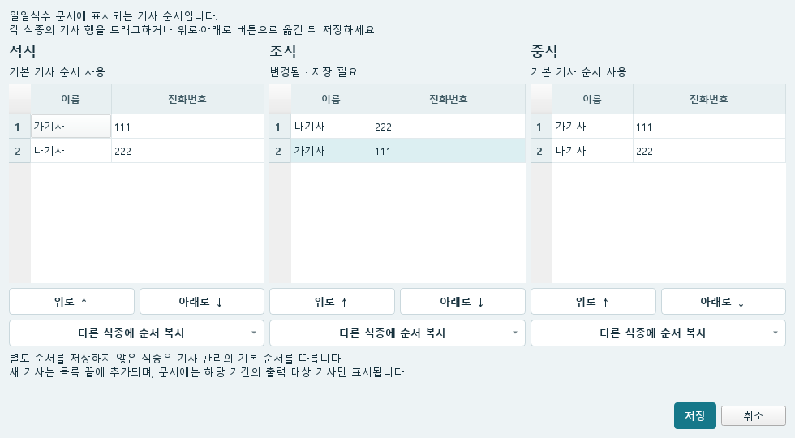
기사 등록·일괄 교체 순서
기사 관리에서 이름·전화번호를 입력하고 새 기사 등록을 누릅니다. 기존 기사를 고쳐 쓰려면 목록에서 선택한 뒤 값을 고치고 선택 기사 수정을 누릅니다. 이름이 같은 기사는 전화번호까지 확인합니다.
배정 일괄 교체에서는 적용 시작일·기존 기사·새 기사·변경할 식종을 정하고 변경 대상 수를 확인한 뒤 일괄 교체 저장을 누릅니다. 기사 목록의 순서를 바꾸던 중이면 먼저 순서 저장을 해야 다른 순서 설정이나 일괄 교체를 열 수 있습니다.
배송순서 수정
메인 명단의 순서 칼럼은 조회용입니다. 더블클릭이나 우클릭으로 수정할 수 없습니다. 배송순서관리에서 기사와 식종을 고른 뒤 행을 원하는 위치로 끌어 놓으면 즉시 저장됩니다.
기사별 중식 시작일·종료일 Excel 내보내기
여는 위치 · 더보기 → 기사·배송 → 기사 관리 → 중식 기간 Excel 내보내기

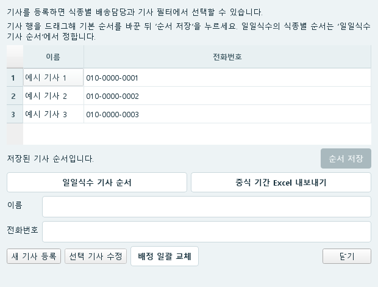
- 중식 기간 Excel 내보내기를 누릅니다. 학교 일정이 없으면 운영 일정에서 먼저 불러와 저장합니다.
- 조회 시작일과 조회 종료일을 확인합니다. 처음에는 명단 조회일과 가까운 학교 일정 범위를 제안하며, 필요한 방학이나 조회 기간으로 바꿀 수 있습니다.
- Excel 내보내기를 누르고 저장 위치와 파일 이름을 정합니다. 생성 Excel 공통 비밀번호를 사용하며, 같은 파일이 있으면 덮어쓸지 확인합니다.
- Excel 파일을 열어 배송기사 / 중식 시작일 / 중식 종료일을 확인합니다. 학교명이나 대상자 정보는 출력하지 않습니다.
저장된 전체 명단에서 선택 기간의 중식 배송대상을 계산합니다. 담당 대상자의 학교 일정·학년 예외, 식종 가입·중지·일시중지, 배송요일·휴무·대체식과 날짜별 기사 배정을 반영해 기사별 첫 배송일과 마지막 배송일을 표시합니다. 담당 대상자가 없는 학교는 기간을 늘리지 않습니다. 명단 검색·필터나 기사 관리의 선택 행으로 범위를 제한하지 않습니다.
학교 일정이 없거나 검토 범위 밖인 날짜는 제외합니다. 등록 기사는 저장된 순서로 표시하고, 계산된 중식 배송이 없으면 날짜를 -로 표시합니다. 기존 이름만 있는 기사와 담당 미지정 배송은 별도 행으로 표시합니다. 시작일과 종료일 사이에 배송이 없는 날이 있을 수 있습니다.
내보내기는 저장된 기사 정보와 순서를 사용합니다. 기사 관리에서 아직 입력·수정 중인 내용은 그대로 남으며 자동 저장하지 않습니다. 취소하면 파일을 만들지 않고 명단·기사 배정·학교 일정도 바꾸지 않습니다.
학교 일정·휴무·단가
여는 위치 · 더보기 → 운영·설정 → 운영 일정

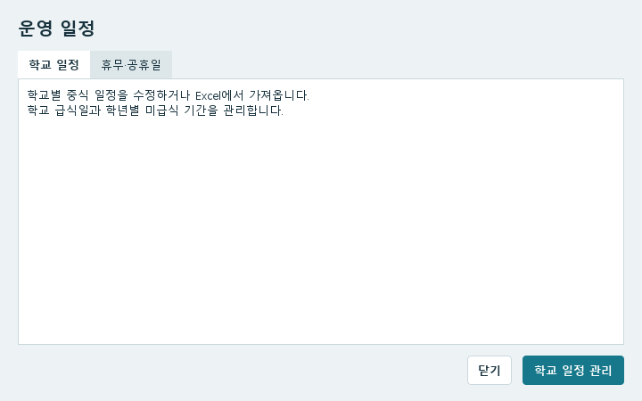
- 중식 일정은 학교 일정에서 학교와 기간을 확인하고 입력하거나 Excel에서 가져옵니다.
- 쉬는 날은 휴무·공휴일에서 정상 운영·미제공·대체식 여부를 확인하고 저장합니다.
- 단가가 바뀌면 더보기 → 운영·설정 → 단가 관리에서 식종별 금액과 적용일을 정합니다.
공휴일은 후보를 검토해 저장하기 전까지 자동으로 제외되지 않습니다. 배송일을 미제공으로 정하면 그날 묶어 배송할 식사도 함께 제외되므로 날짜와 식종을 확인합니다.
설정 → 배송·식수 → 식수·청구서 설정의 이번 달에 묶어 배송하는 다음 달 식수 포함을 켜면 청구서·확인서를 실제 배송일 기준으로, 끄면 식사일 기준으로 계산합니다. 급식 일일식수는 선택한 실제 배송일 범위의 식수를, 행복도시락 일일식수는 선택일의 가입·상태에 따른 인원을 표시합니다.
학교 일정 파일 불러오기
- 운영 일정 → 학교 일정을 엽니다. 저장된 일정이 있으면 다음 방학 일정 추가를 누릅니다.
- 파일을 선택하고 학교명 · 방학식 · 방학식 급식 제공 여부 · 개학식 · 개학식 급식 제공 여부 열을 연결합니다. 비고 열은 선택 사항입니다. 기본 파일은 2행이 제목, 3행부터 학교 자료입니다.
- 방학식 급식 제공으로 판단할 값과 개학식 급식 제공으로 판단할 값을 입력합니다. 기본값은 O이며 파일에 맞춰 ‘제공’, ‘급식 실시’, ‘○’ 등으로 바꿀 수 있습니다. 두 날짜에 서로 다른 값을 지정할 수 있습니다.
- 선택한 열로 다시 읽기로 결과를 확인합니다. 미리보기의 제공 여부는 ○ / × 기호입니다. 앞뒤 공백을 제외하고 입력한 문자열과 정확히 같으면 제공, 다르거나 빈 칸이면 미제공입니다. 대소문자와 서로 다른 기호는 구분합니다. ‘제공’은 학교에서 급식을 준다는 뜻이며 그날 센터 중식은 제외됩니다.
- 학교 일정 저장을 누릅니다. 별도의 학교별 일정 검토창 없이 현재 열 연결과 판정 값으로 다시 읽어 저장합니다. 날짜 오류나 서로 충돌하는 일정은 수정해야 저장할 수 있습니다. 저장하면 전체 명단의 기존 중식 대상과 개인 중식 시작일·종료일을 초기화합니다. 이번 파일에서 가장 이른 방학식 날짜부터 기존 중식 가입을 해제하며, 그 이전의 가입·식수 기록과 변경 이력, 조식·석식은 보존합니다. 파일에 없는 학교의 기존 중식 대상도 초기화됩니다. 같은 파일을 다시 저장해도 초기화되므로 안내된 날짜를 확인하세요.
- 저장 후 방학 중식 대상자 갱신에서 방금 저장한 방학 기록을 선택하고 중식 명단을 불러옵니다. 명단을 불러오기 전에는 새 기간의 중식 대상이 없습니다. 명단 반영 뒤 개인 중식 날짜와 해당 기간의 인원을 확인하세요.

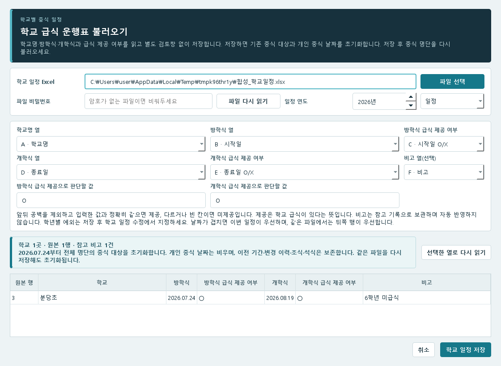
방학 기록 누적·학교 검색
- 다음 방학 파일은 다음 방학 일정 추가로 이어서 불러옵니다. 같은 학교·같은 달이라도 방학식~개학식 밖의 기존 일정은 남고, 겹치는 날짜는 나중에 불러온 일정이 우선합니다. 한 파일 안에서 같은 학교의 날짜가 겹치면 뒤쪽 행이 우선합니다.
- 위쪽 불러온 방학에서 기간·파일 이름·변경번호를 보고 원하는 기록을 선택합니다. 처음에는 가장 최근에 불러온 기록이 선택됩니다.
- 왼쪽 학교 이름 검색에 학교명의 일부를 입력합니다. 공백을 넣거나 빼도 검색되며 선택한 기록에 있는 학교만 표시합니다.
- 학교를 선택하면 센터 중식 시작일·종료일을 방학별 한 행으로 확인할 수 있습니다. 표에는 날짜별 학년 예외와 실제 중식 일수도 표시합니다.
- 불러온 원본 보기는 불러올 당시의 학교별 날짜·제공 여부·비고와 저장 시각을 보여줍니다. 이후 직접 수정한 값은 현재 일정 표에 표시됩니다. 방학 선택과 검색만으로 저장 자료가 바뀌지는 않습니다.
불러온 일정 한 번분 전체 삭제
- 불러온 방학에서 삭제할 기간·파일·변경번호를 선택합니다.
- 선택한 불러오기 전체 삭제를 누릅니다. 이 파일에서 불러온 모든 학교가 대상입니다. 검색 결과나 선택한 학교만 삭제하는 기능이 아닙니다.
- 확인창의 파일과 학교 수를 확인하고 삭제합니다. 수정 중인 내용이 있으면 먼저 저장하거나 창을 닫고 다시 여세요.
다른 불러오기 기록은 남고, 겹쳤던 날짜는 남은 기록의 일정으로 돌아갑니다. 남아 있는 일정에 직접 수정한 내용도 유지합니다. 삭제한 파일만 있던 학교는 목록에서 사라집니다. 일정 파일을 삭제해도 초기화한 중식 대상과 개인 날짜가 다시 살아나지는 않습니다. 초기화 전 명단까지 되돌리려면 이전 자료로 되돌리기에서 일정 불러오기 전 변경번호를 선택합니다. 구버전에서 날짜만 자동으로 채운 기록은 이후 수정하지 않았을 때 해당 날짜가 이전 값으로 돌아갈 수 있습니다.
삭제도 새 변경 기록으로 저장하므로 이전 자료로 되돌리기에서 삭제 전 변경번호로 복구할 수 있습니다. 일정 불러오기 전으로 되돌렸더라도 같은 학교 파일을 다시 불러올 수 있습니다. 원래 불러온 기록은 전체 변경 이력에 보관되며 현재 방학 선택 목록에서는 제외됩니다.
날짜와 제공 여부 예시
예를 들어 2027-07-22 / x / 2027-08-18 / O를 제공 판정 값 O로 읽으면, 방학식은 미제공·개학식은 제공이므로 센터 중식 기간은 7월 22일~8월 17일입니다. 방학식과 개학식 사이의 평일이 센터 중식 대상이며 주말·휴무·개인별 상태는 실제 배송 계산에서 추가로 반영합니다.
전체 저장 기간에서도 실제 센터 중식 기간만 보여줍니다. 파일에 없던 월초 구간이나 학교 급식 제공일은 표시하지 않습니다. 제공 여부·중식 처리 칼럼도 없으며, 원본의 제공 여부는 불러온 원본 보기에서 ○ / × 기호로 확인합니다.

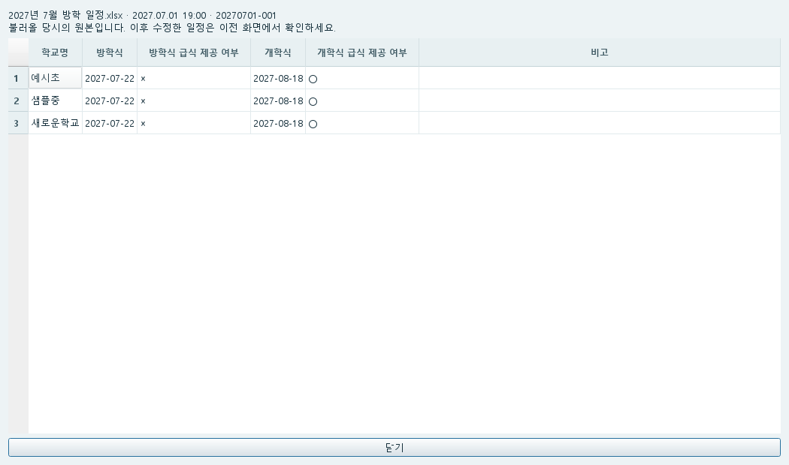
비고와 학년별 급식 차이
비고는 원본의 특이사항을 참고 기록으로 남기는 열입니다. ‘6학년 미급식’처럼 적혀 있어도 자동으로 날짜나 학년 조건을 만들지 않습니다. 비고 열을 연결하지 않아도 학교 일정을 저장할 수 있습니다.
학년별 차이는 특정 날짜 하루에 지정합니다. 방학식에 6학년만 학교 급식을 못 받으면 그 날짜를 고르고 6학년을 체크합니다. 6학년만 학교에서 먹으면 1~5학년을 체크합니다. 체크한 학년만 그날 센터 중식 대상이며 개인별 가입·배송 상태도 함께 적용합니다.
저장한 학교 일정 직접 고치기
- 학교와 방학 행을 선택합니다. 중식 시작일·종료일을 수정하고 수정 내용을 표에 반영을 누릅니다. 다른 기간을 추가할 때는 중식 기간 추가를 사용합니다.
- 학년 예외는 기간 입력과 별개입니다. 학년 예외 날짜에서 평일 하루를 고르고 이 날짜에 중식 받을 학년을 체크한 뒤 선택 날짜에 학년 예외 반영을 누릅니다. 선택한 날짜만 바뀌며 다른 날짜에는 적용하지 않습니다. 모두 해제해 반영하면 그날은 중식에서 제외됩니다.
- 초등학교는 1~6학년, 중·고등학교는 1~3학년, 이름으로 구분되지 않는 학교는 1~6학년을 선택할 수 있습니다. 날짜를 바꾸면 그 날짜에 저장된 예외가 표시됩니다.
- 변경 일정 저장을 눌러 확정합니다. 표에 반영만 하면 운영 데이터는 바뀌지 않습니다. 이 학교 원래대로로 저장 전 수정을 되돌릴 수 있습니다.

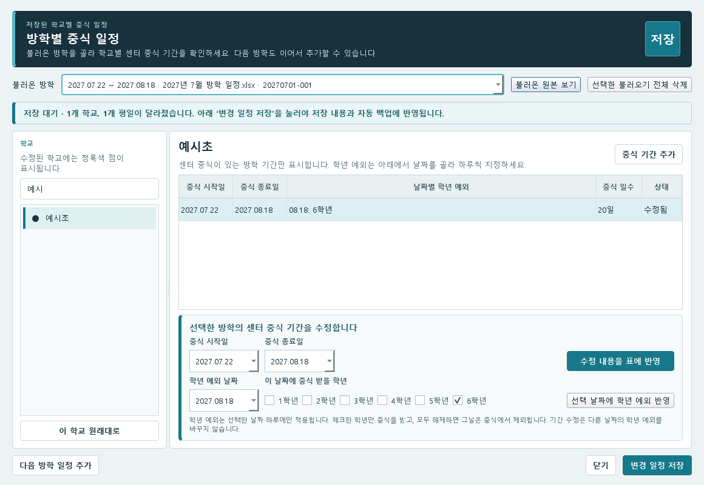
학교 일정 화면에서 날짜·학년 예외를 직접 수정하는 것은 중식 대상 초기화를 하지 않습니다. Excel 파일을 다시 불러와 저장하면 중식 대상이 초기화되고 이번 파일의 일정 범위를 새 값으로 반영하므로, 중식 명단을 다시 불러오고 해당 범위의 학년 예외도 확인하세요.
공휴일·자체 휴무·대체 배송 등록
- 운영 일정 → 휴무·공휴일에서 연도를 고르고 검토할 날짜를 체크합니다. 필요하면 미검토 전체 선택을 누릅니다.
- 적용할 식종과 정상 운영·미제공·대체식을 선택합니다. 미제공은 해당 식수를 청구에서 제외하며 대체식은 원래 식사일의 청구를 유지하고 실제 제공일을 바꿉니다.
- 대체식은 제안된 날짜를 확인하고 날짜·식종별 실제 제공일을 수정합니다.
- 공휴일이 아닌 휴무는 공휴일 아닌 휴무 직접 추가에서 기간을 정합니다. 여러 날짜의 대체식을 나누어 제공하려면 날짜별로 다르게 지정을 사용합니다.
- 대상 기간·식종·실제 제공일을 확인해 저장하고 새 문서를 만들어 확인합니다.
배송순서관리
중식 기간 표시 체크 하나로 중식 시작일·종료일을 함께 보이거나 숨깁니다. 선택은 다음에 창을 열어도 유지됩니다. 같은 가구의 날짜가 다르면 이름과 날짜를 줄바꿈으로 구분하며, 두 Excel 내보내기에도 중식 기간 표시 여부를 반영합니다. 날짜 수정은 명단의 중식 시작일·종료일 칼럼에서 합니다.

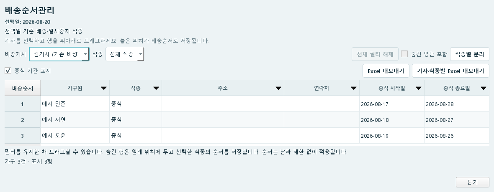
왼쪽 배송순서는 명단 원본에 저장된 번호입니다. 검색·필터·식종 선택으로 일부 행을 숨겨도 번호를 바꾸지 않습니다. 합친 행의 식종별 번호가 다르면 식종 이름과 번호를 함께 표시합니다. 행을 드래그해 저장하면 원본 명단에도 같은 번호가 반영됩니다.
여는 위치 · 더보기 → 기사·배송 → 배송순서관리
- 위쪽에서 기사를 선택하고 전체 식종 또는 석식·조식·중식을 고릅니다.
- 명단에서 옮길 행을 누른 채 원하는 자리로 끌어 놓습니다. 변경한 순서가 저장됩니다.
- 같은 가구를 식종별로 나눠 볼 때는 식종별 분리, 다시 합칠 때는 분리 해제를 사용합니다.
- 선택한 기사·식종으로 배송 문서를 새로 만들어 순서를 확인합니다.
식종별 분리와 분리 해제는 화면에 보이는 행만 바꿉니다. 가구를 나누거나 배정을 변경하지 않습니다. 숨긴 명단 포함을 켜면 중지·현재 상태가 없는 식종과 장기 미배송 대상자도 조회합니다.
기사별 명단을 Excel로 보내기
Excel 내보내기는 현재 선택한 기사와 화면에 보이는 행·칼럼·필터·분리 상태를 저장합니다. 기사·식종별 Excel 내보내기는 선택한 기사의 자료를 기사-식종별 시트로 나누고 배송순서로 정렬합니다. 이 방식은 열 검색·값 필터·분리 표시를 무시하지만 숨긴 명단 포함 여부는 반영합니다. 파일은 생성 Excel 공통 비밀번호를 사용합니다.
단가 관리
여는 위치 · 더보기 → 운영·설정 → 단가 관리
- 현재 단가와 적용 기간을 확인합니다.
- 변경할 식종을 체크하고 새 단가와 적용일을 입력합니다. 여러 식종을 체크하면 같은 금액을 함께 적용합니다.
- 단가 변경 저장을 누릅니다. 청구서를 다시 만들어 변경한 날짜 전후의 금액을 확인합니다.
같은 달 안에서 단가가 달라지면 각 제공일에 적용되는 단가로 계산합니다. 이미 만든 Excel 파일은 다시 계산되지 않습니다.
월별 조회·민원·전체 변경 이력

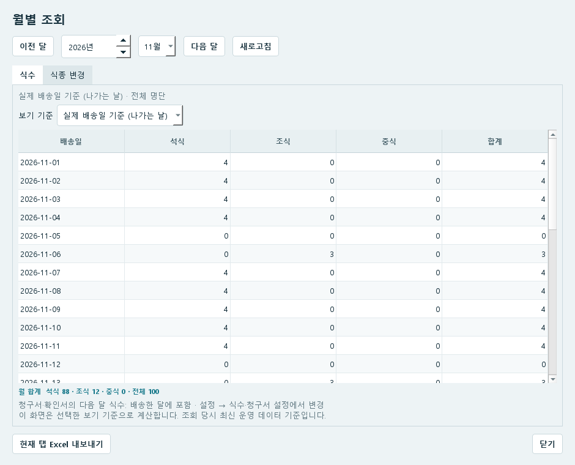
원하는 연월과 탭을 선택한 뒤 현재 탭 Excel 내보내기를 누르고 저장 위치를 고릅니다. 식수는 선택한 배송일·식사일 기준과 월 합계를, 식종 변경은 현재 필터로 보이는 기록을 정렬된 순서대로 저장합니다. 생성 Excel 공통 비밀번호를 사용합니다. 조회 실패 시에는 내보낼 수 없습니다.
식종 변경 탭의 접수 경로·비고 셀을 더블클릭하거나 기록을 우클릭해 접수 경로·비고 수정을 선택합니다. 현재 값을 고쳐 저장하면 개인 이력과 월별 이력에 반영됩니다. 배송 상태·기간은 바뀌지 않으며 원본과 수정 내용은 전체 변경 이력에 남습니다.
| 할 일 | 여는 위치·방법 |
|---|---|
| 월별 식수 확인 | 더보기 → 조회·기록 → 월별 조회 → 식수 탭. 연월을 정해 일별 식수와 월 합계를 확인합니다. |
| 월별 상태 변경 확인 | 같은 창의 식종 변경 탭. 열 제목 옆 필터로 이름·식종·접수 경로 등을 좁혀 봅니다. |
| 민원 기록 | 대상자 칸 우클릭 → 민원. 접수 경로와 내용을 입력해 저장합니다. |
| 개인 민원·변경 내용 | 대상자 칸 우클릭 → 이력보기. 정보 변경·식종 변경·민원 탭에서 확인합니다. |
| 전체 민원 | 더보기 → 조회·기록 → 전체 민원. |
| 전체 저장 기록 | 더보기 → 조회·기록 → 전체 변경 이력. 변경번호·사유·변경자로 찾고 선택한 기록의 내용을 확인합니다. |
월별 조회는 현재 명단의 검색·필터와 관계없이 전체 자료를 읽습니다. 종료일 없는 배송·중지는 시작한 달에 나오고, 기간이 있는 일시중지는 기간이 겹치는 달에 나옵니다.
월별 조회의 식수 탭에서 실제 배송일 기준 (나가는 날)과 식사일 기준을 바꿔 볼 수 있습니다. 예를 들어 10월 30일에 나가는 11월 1일 조식은 배송일 보기에서는 10월, 식사일 보기에서는 11월에 집계합니다. 이 화면의 보기 선택은 청구서 설정을 바꾸지 않습니다.
명단 불러오기

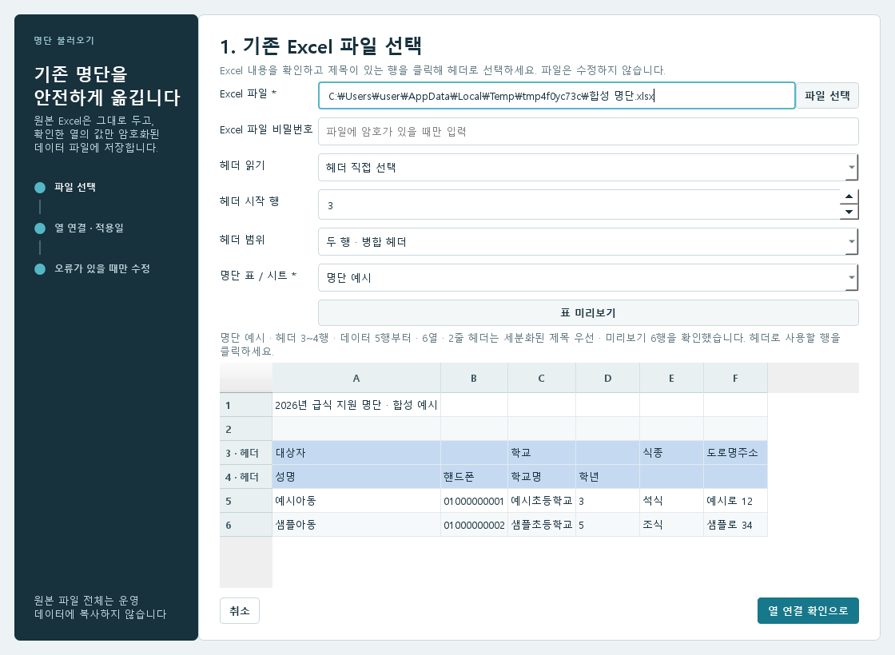
문서 사용 표시는 청구서·확인서·일일식수·배송목록의 기본 연결과 사용자가 저장한 1·2순위 연결, 일일식수 추가 비고 및 현재 배송목록 양식의 플레이스홀더 연결을 반영합니다. 배송목록은 실제 출력에 체크한 칼럼과 그 칼럼의 우선 연결만 포함합니다. 체크를 해제한 칼럼이라도 다른 문서에서 사용하면 표시를 유지합니다. 원본 Excel 열까지 연결되었다는 뜻은 아니므로 타일 연결도 확인하세요.
제목 옆에 청록색 (가구 묶기 기준)이 붙은 칼럼은 필수 연결입니다. 설정에서 고른 기준 칼럼 모두에 원본 Excel 열을 연결해야 연결 확인과 불러오기를 완료할 수 있습니다. 기본 기준은 핸드폰이며, 기준이 여러 개이면 전부 연결합니다. 개별 행의 기준값이 비어 있으면 다른 사람과 자동으로 묶지 않습니다.
여는 위치 · 더보기 → 명단·파일 → 명단 불러오기
불일치 비교표를 Excel로 저장할 예정이라면 명단 불러오기를 시작하기 전에 설정 → 문서 → 생성 Excel 비밀번호에서 공통 Excel 비밀번호가 설정되어 있는지 확인하고, 없으면 먼저 지정하세요.
- Excel 파일을 선택합니다. 비밀번호가 있으면 열기 비밀번호를 입력합니다. 기본 헤더 직접 선택에서 시트를 고르고 원본 미리보기의 제목 행이나 왼쪽 행 번호를 클릭합니다. 선택한 행은 파란색과 헤더 표시로 구분됩니다. 헤더 범위의 기본값은 두 행 · 병합 헤더입니다. 두 행짜리 제목의 첫 행을 클릭하세요. 제목이 한 행인 파일은 헤더 범위 → 한 행으로 바꿉니다. 새 파일을 선택하면 다시 두 행이 기본으로 선택됩니다. 데이터는 헤더 마지막 행 바로 아래부터 읽습니다. 원하는 행이 보이지 않으면 헤더 시작 행에 번호를 입력합니다. Excel 표의 정해진 범위를 읽으려면 자동 · Excel 표 우선을 선택하고 표 미리보기를 누릅니다.
- 기존 명단을 갱신할 때는 불러오기 방식에서 일반 명단 반영 또는 방학 중식 대상자 갱신을 선택합니다. 처음 명단을 넣을 때는 이 선택이 없습니다.
- 열 연결 확인하기를 엽니다. 기존 DB에 일반 명단이나 중식 명단을 불러올 때는 모든 Excel 칼럼이 미연결 상태로 시작합니다. 같은 이름의 칼럼이나 이전에 저장한 연결도 자동으로 넣지 않습니다. 원본 Excel 타일을 해당 칼럼 자리로 끌거나, 타일을 선택한 뒤 연결할 자리를 누릅니다.
- 일반 명단 반영에서는 문서에 사용하는 칼럼 → 식종 → 나머지 칼럼 순서로 확인하고 식종도 직접 연결합니다. 방학 중식 대상자 갱신에서는 식종 연결 구역이 없으며, 가져올 행 조건에 포함된 사람을 중식 대상으로 반영합니다. 최초 DB 생성은 기존처럼 자동 열 연결과 식종 입력을 사용합니다.
- 가져오지 않을 타일은 아래의 아직 연결하지 않은 엑셀 칼럼 · 가져오지 않음에 둡니다. 새 문자 칼럼이 필요하면 새 DB 칼럼 추가 (문자)에 놓습니다. 도로명주소는 원본 열 하나를 연결합니다.
- 연결 확인 완료를 누르고 일반 명단은 적용일, 중식 명단은 방학 기록과 가져올 행 조건을 확인한 뒤 불러오기를 누릅니다. 최초 명단은 이번 달 1일을 기본으로 제안하므로 실제 시작일에 맞춥니다.
- 오류가 있으면 정정표에서 값을 고치거나 행 제외를 체크하고 수정·제외 적용 후 불러오기를 누릅니다. 같은 원본 행의 여러 오류는 함께 제외됩니다. 원본 Excel 파일은 바뀌지 않습니다.
- 기존 값과 충돌하면 항목별로 가져온 값 사용 또는 기존 값 유지를 고릅니다. 일부 사람만 다르게 반영하려면 사람별 예외 보기를 펼쳐 값을 고르거나 직접 수정합니다. 사람 연결이 모호할 때는 기존 대상자에 반영할지 새 대상자로 등록할지 정합니다. 일반 명단 반영에서는 이 행 제외도 선택할 수 있습니다.
- 완료 후 적용일의 명단을 확인합니다. 오류나 확인할 충돌이 없으면 별도의 마지막 전체 명단 확인 없이 저장됩니다.

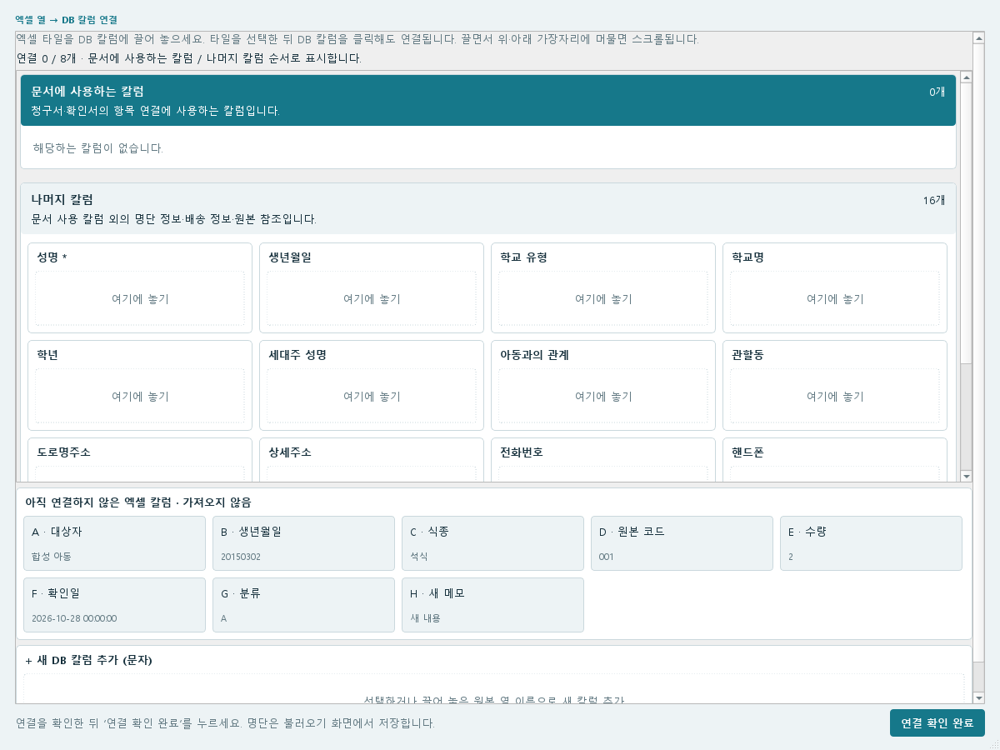

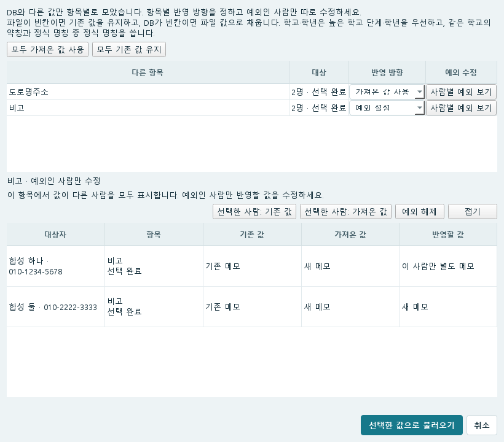
원본 빈칸은 기존 값을 유지하며, 기존에 비어 있던 값은 채웁니다. 학교·학년은 높은 학교 단계와 학년을 자동으로 선택하되 판단할 수 없는 값은 확인합니다. 같은 학교의 약칭과 정식 명칭이 함께 있으면 성남중보다 성남중학교를 사용합니다. 초/초등학교, 고/고등학교도 같으며, 학년은 별도로 높은 값을 유지합니다. 가구는 설정의 가구 묶기 기준에서 선택한 모든 칼럼이 일치할 때 묶습니다. 기본은 핸드폰이며 선택한 값에 빈칸이 있으면 묶지 않습니다.
사람별 예외로 다른 값 반영하기
- 다른 값 처리에서 항목별 반영 방향을 먼저 고릅니다. 가져온 값 사용 또는 기존 값 유지를 선택하면 해당 항목의 사람들에게 일괄 적용됩니다.
- 일부 사람만 다르게 처리하려면 해당 항목의 사람별 예외 보기를 누릅니다. 아래 표에는 이미 예외로 정한 사람만이 아니라 그 항목에서 값이 다른 모든 사람이 표시됩니다.
- 예외로 처리할 사람의 기존 값 또는 가져온 값 셀을 누르거나 반영할 값을 직접 수정합니다. 여러 사람을 선택한 뒤 선택한 사람: 기존 값 또는 선택한 사람: 가져온 값을 사용할 수도 있습니다.
- 예외를 되돌리려면 해당 사람을 선택하고 예외 해제를 누릅니다. 먼저 정한 항목별 반영 방향으로 돌아갑니다. 반영 방향을 정하지 않았다면 다시 선택이 필요합니다.
- 항목별 미선택 건수가 남아 있지 않은지 확인하고 선택한 값으로 불러오기를 누릅니다. 추가 확인창이 나오면 계속 확인한 뒤 적용일의 명단을 확인합니다.
불일치 항목을 Excel로 내보내기
- 일반 명단 또는 방학 중식의 다른 값 처리 화면에서 불일치 Excel 내보내기를 누릅니다. 반영 방향을 아직 선택하지 않아도 저장할 수 있습니다.
- 저장할 위치와 파일 이름을 정합니다. 기존 파일과 이름이 같으면 덮어쓸지 확인합니다. 파일에는 미리 설정한 공통 Excel 비밀번호가 적용됩니다.
- Excel의 불일치 시트에서 원본 파일·시트·원본 행번호·이름·핸드폰·세대주명으로 사람을 찾습니다. 오른쪽의 DB_항목 / 명단_항목을 비교합니다. 다른 값 쌍은 노란색이며, 그 사람에게 불일치가 없는 항목 쌍은 비어 있습니다.
- 검토 도중 비밀번호 등 설정을 바꾸지 않았고 몇 건만 고칠 때는 열린 검토창에서 가져온 값 사용·기존 값 유지·사람별 예외 보기를 사용해 직접 수정하고 계속 불러옵니다. 내보내기는 현재 선택이나 입력을 지우지 않습니다.
- 원본 명단을 고칠 때는 검토창에서 취소한 뒤 원본 Excel을 수정하고 명단을 다시 불러옵니다. 비교표는 확인용이며 원본 명단을 대신해 불러오는 파일은 아닙니다.
펼쳐 놓은 항목에 한정하지 않고 검토창의 전체 불일치를 저장합니다. 같은 값·자동 처리 항목·신규 대상자는 제외합니다. GUI에서 직접 수정한 반영 예정값은 비교표의 DB 값·원본 값을 바꾸지 않습니다. 내보내기만으로 운영 DB나 변경 이력을 저장하지 않으며, 저장 취소나 실패 후에도 검토를 계속할 수 있습니다.

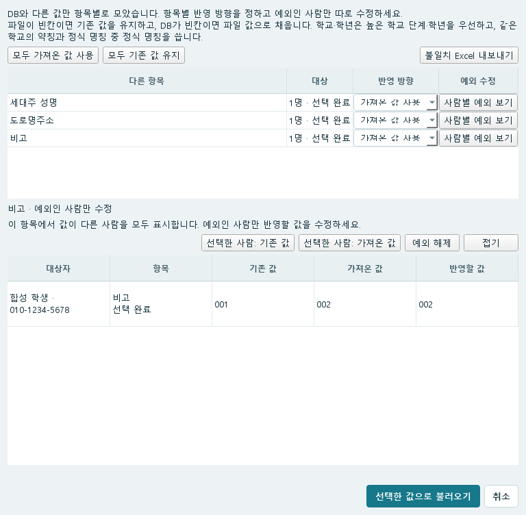
동명이인·핸드폰 변경 확인하기
일반 명단과 방학 중식 명단 모두 이름과 빈칸이 아닌 핸드폰이 일치하는 기존 대상자가 한 명이고 원본에 같은 이름·핸드폰의 중복 행이 없으면 그 사람에게 자동 연결합니다. 핸드폰의 하이픈·공백은 구분하지 않습니다. 다른 번호를 쓰는 동명이인이 있어도 정확히 일치하는 사람을 우선합니다.
자동 연결되지 않은 행은 이름과 세대주명이 같으면 핸드폰이 다르거나 없어도 동일인 의심 대상으로 표시합니다. 이름·세대주명은 공백을 구분하지 않으며 빈 세대주명끼리는 일치로 보지 않습니다. 원본 안에서 이름·세대주명이 중복된 행도 확인합니다. 표에는 성명·핸드폰·세대주명과 이번에 연결한 모든 칼럼이 표시됩니다. 학교·주소·사용자 칼럼뿐 아니라 연결한 식종·배송담당·배송순서도 확인할 수 있습니다. 연결한 칼럼에 값이 없으면 미입력으로 표시합니다. 아래 가로 스크롤을 움직여 나머지 칼럼과 오른쪽의 확인 사유·행 반영 방법을 확인하고 기존 후보의 정보와 비교하세요. 칼럼 제목에 마우스를 올리면 연결한 원본 열을 확인할 수 있습니다.
확인 행을 모두 다른 사람으로 넣으려면 확인 행 모두 신규 등록을 누릅니다. 표에 표시된 모든 행이 새 대상자로 등록으로 바뀌며, 이름·핸드폰이 같아 자동 연결된 행은 유지합니다. 필요한 행은 개별 선택을 다시 바꾼 뒤 선택한 내용으로 불러오기를 누릅니다. 필요한 가구 선택이 남아 있으면 먼저 선택해야 합니다. 취소하면 저장하지 않습니다. 사람을 새로 등록해도 가구는 저장된 가구 묶기 기준을 따릅니다.

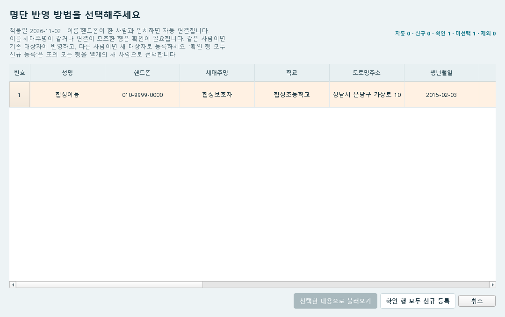
방학 중식에서 이름은 같지만 핸드폰이 다르면 번호가 바뀐 같은 사람인지 별개의 동명이인인지 확인합니다. 행 반영 방법에서 같은 사람이면 이름·핸드폰·학교를 확인해 기존 대상자에 반영, 다른 사람이면 새 대상자로 등록을 선택합니다. 후보가 보인다는 것만으로 자동 연결된 상태는 아닙니다. 선택한 내용으로 불러오기를 누른 뒤 서로 다른 값이 있으면 다음 화면에서 반영할 값을 정합니다.
방학 중식에서 핸드폰이 없거나 같은 이름·핸드폰이 원본 또는 기존 명단에 중복되어 있으면 추가 확인이 필요합니다. 일반 명단은 이름·핸드폰으로 연결되지 않을 때 생년월일도 확인합니다. 사람 연결은 기존 누구의 정보를 갱신할지 정하는 과정이고, 가구 묶기 기준은 어떤 사람들을 한 가구로 묶을지 정하는 별도 설정입니다.
방학 중식 대상자 갱신
- 먼저 운영 일정 → 학교 일정에서 방학 일정 파일을 불러와 저장합니다.
- 명단 불러오기에서 방학 중식 대상자 갱신을 선택하고 명단 파일을 읽습니다.
- 열 연결 단계의 적용할 방학 기록에서 기간·파일명·변경번호를 확인해 해당 방학을 선택합니다. 최근 기록이 먼저 표시됩니다.
- 기존 대상자는 항상 업데이트로 처리합니다. 가져온 값과 기존 값이 다르면 검토창에서 반영할 값을 고르고, 선택한 방학의 학교·학년별 중식 기간을 적용합니다. 해당 방학에 미등록인 사람과 신규 대상자도 추가합니다.
- 열 연결을 확인하고 불러오기를 누릅니다. 2차·3차 명단도 같은 방학을 골라 반복하면 됩니다.
각 사람은 선택한 기록 안의 학교·학년별 중식 시작일·종료일에만 등록됩니다. 학교 일정이 선택 기록에 없거나 해당 학년의 중식 제공일이 없으면 학교명과 일정·학년 예외를 먼저 확인하세요. 이번 명단에서 빠진 사람은 그대로 유지하므로 별도로 비활성화할 필요가 없습니다. 다른 방학의 등록 기간과 조식·석식도 유지합니다.

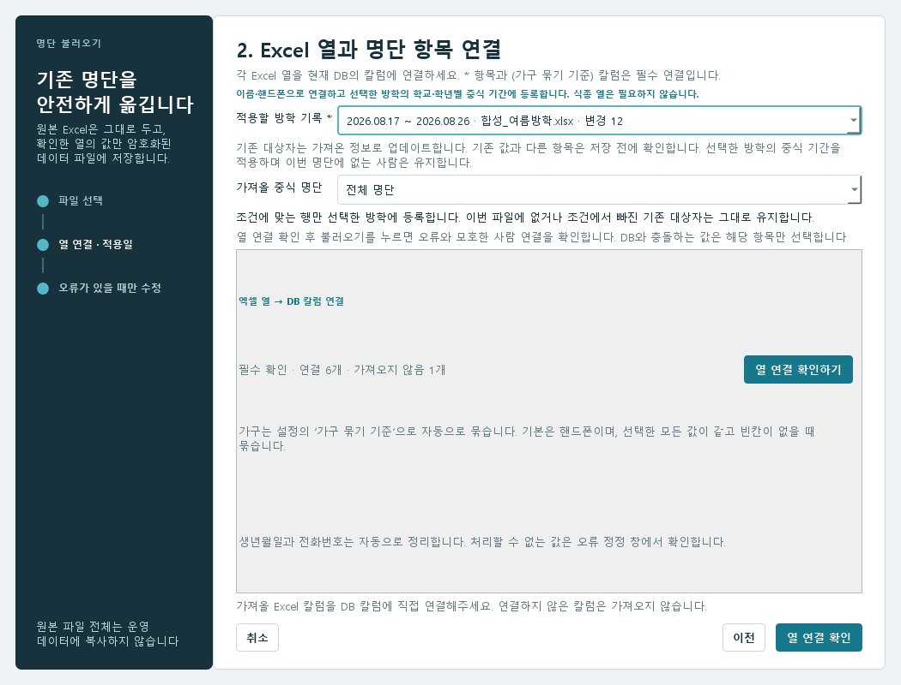
저장 뒤 명단의 중식 날짜 칼럼에서 사람별로 수정할 수 있으며 실제 계산에도 반영됩니다.
가져올 중식 명단에서 전체 명단, 선택한 칼럼에 값이 있는 행, 선택한 칼럼이 특정 값인 행 중 하나를 고릅니다. 전체 명단에서는 조건 입력칸이 나오지 않습니다. 선택한 칼럼에 값이 있는 행에서는 조건 칼럼만, 특정 값인 행에서는 조건 칼럼과 일치할 값을 입력합니다. 값 있음에는 숫자 0도 포함되며 공백뿐인 셀은 제외됩니다. 특정 값은 앞뒤 공백을 제외하고 정확히 같은 값만 선택합니다.
중식 연결은 이름과 핸드폰 번호를 기준으로 합니다. 조식·석식은 유지합니다. 칼럼 관리의 표시 체크는 화면만 바꾸지만 명단 불러오기는 운영 데이터를 바꿉니다.
장기 미배송 보관함
여는 위치 · 더보기 → 명단·파일 → 장기 미배송 보관함
- 왼쪽 조회 날짜를 맞춘 뒤 보관함을 엽니다.
- 조회 날짜를 기준으로 오래 배송하지 않은 대상자를 확인합니다. 필요한 사람은 검색으로 찾습니다.
- 보관 기준 설정에서 연속 미배송 일수를 바꾸면 대상 목록을 미리 볼 수 있습니다. 저장하면 새 기준을 사용하고, 취소하면 이전 기준으로 돌아갑니다.
- 다시 배송할 사람은 식종 칸에서 배송 시작일을 등록합니다. 일반 명단으로 돌아갈 때는 나가기를 누릅니다.
보관함은 대상자를 삭제하는 기능이 아닙니다. 기본 기준은 연속 미배송 365일입니다.
전체 민원
여는 위치 · 더보기 → 조회·기록 → 전체 민원
- 전체 대상자의 민원 목록에서 이름·접수일·내용을 확인합니다.
- 검색칸에 이름이나 내용의 일부를 입력해 필요한 기록을 찾습니다.
- 목록에서 기록을 선택하면 아래 선택한 민원 전체 내용에서 긴 내용까지 읽고 복사할 수 있습니다.
- 새 민원을 남길 때는 명단으로 돌아가 대상자 칸을 우클릭하고 민원에서 접수 경로와 내용을 입력해 저장합니다.
메인 명단에 걸린 검색·필터와 관계없이 전체 민원을 조회합니다. 한 사람의 기록은 대상자의 이력보기 → 민원에서도 볼 수 있습니다.
개별 민원 접수창에서 접수 시각·접수 경로·관련 식종·내용을 확인합니다. 같은 가구원에게도 같은 민원을 남길 때는 같은 가구에도 함께 접수를 선택한 뒤 저장합니다. 민원 접수 자체가 배송 상태를 바꾸지는 않으므로 일시중지나 중지가 필요하면 식종 상태도 별도로 변경하세요.
설정 전체 항목 찾기
여는 위치 · 더보기 → 운영·설정 → 설정

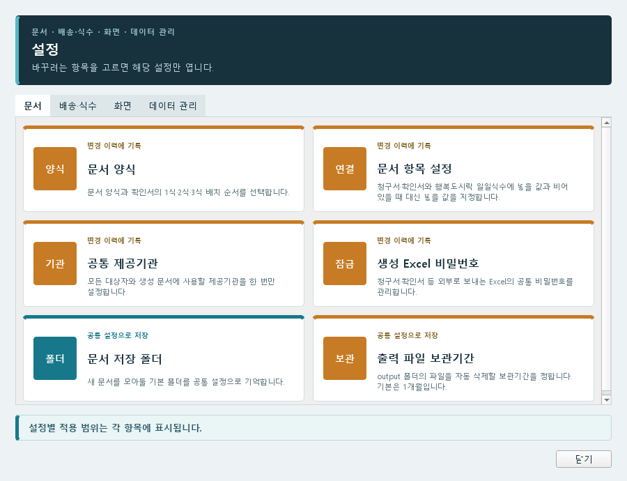
설정 전체 항목에서 20개 설정의 사용 방법을 볼 수 있습니다. 문서 연결·배송 기본값·화면 배치·비밀번호·저장 위치를 현재 설정 탭 순서로 정리했습니다.
이전 저장 시점 확인·복구
여는 위치 · 더보기 → 조회·기록 → 전체 변경 이력
- 되돌아갈 변경번호를 선택하고 내용을 확인합니다.
- 이전 자료로 되돌리기를 엽니다.
- 기본 선택인 현재 자료를 이 시점으로 되돌리기를 그대로 두면 현재 명단과 설정을 선택 시점으로 되돌리고 새 변경 기록을 남깁니다. 기존 변경 이력은 보관합니다.
- 현재 작업을 남기고 따로 이어가려면 이 시점에서 별도 작업본 만들기를 선택하고 이름을 입력합니다. 같은 운영 파일 안에 별도 작업본을 만듭니다.
- 확인 내용을 읽고 진행합니다. 완료 후 프로그램을 다시 실행해 상태를 확인합니다.
초기 명단 적용일은 최초 명단의 식종 시작일을 정정할 때 사용합니다. 가구 연결일은 실행 조건이 아니므로 가구 소속 기록 복구를 먼저 할 필요가 없습니다.
변경번호를 복구하면 그 시점 이후에 등록한 식종 변경은 선택 정보·개인 식종 이력·월별 이력·청구서 이력에서 제외됩니다. 원본 기록은 전체 변경 이력에 보존됩니다. 그 기록이 있던 시점으로 다시 복구하면 식종 이력도 다시 보입니다.
작업본 바꾸기와 복구 범위
전체 변경 이력에서 표시할 작업본을 고르는 것은 이력 조회만 바꿉니다. 실제 작업 대상을 바꾸려면 이 작업본으로 전환을 누르고 안내에 따라 종료 후 다시 실행합니다. 새 작업본은 선택한 변경번호의 명단·상태·설정에서 시작하며 기존 작업본의 작업은 남습니다. 작업본끼리 자동으로 합치지는 않습니다.
현재 자료를 이 시점으로 되돌리기는 선택 시점으로 복구한 내용을 새 변경 기록으로 남깁니다. 한 사람의 식종 오류만 고치려면 전체 복구보다 해당 식종 변경 기록 취소를 먼저 확인하세요. 복구·전환으로 이미 만들어 외부에 보낸 Excel이 바뀌지는 않으므로 필요한 문서를 다시 생성합니다.

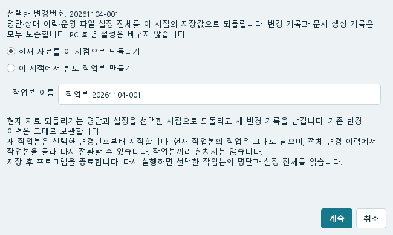
작업 중 막힐 때
오류 안내는 원인과 다음 행동을 설명합니다. 다른 창에서 자료가 바뀌어 저장하지 못했다면 작업 창을 다시 열어 최신 내용을 확인한 뒤 재입력하세요. 자료와 변경 이력이 맞지 않는다는 안내가 계속되면 운영 파일을 보관한 채 담당자에게 점검을 요청하거나 정상 백업을 복원하세요. 저장 완료 후 백업 실패는 별도로 안내되므로 같은 작업을 중복 저장하지 않도록 현재 저장 상태부터 확인하세요.
| 화면에서 보이는 문제 | 먼저 확인할 곳 |
|---|---|
| 검색한 사람이 안 보임 | 검색어·칼럼 필터를 지우고 숨긴 행 포함을 체크합니다. 보관함을 보고 있다면 나가기를 누릅니다. |
| 상태를 저장했는데 그대로 보임 | 왼쪽 조회 날짜가 변경 시작일 전인지 확인합니다. 개인 식종 변경 이력의 기간도 확인합니다. |
| 선택할 수 없는 날짜 | 기간 옆 실제 배송 요일을 확인합니다. 식종마다 허용되는 요일이 다릅니다. |
| 중식이 - 또는 0식 | 학교 일정의 검토 기간, 해당 학교의 급식일, 가입·상태를 확인합니다. |
| 과거 가구 소속이 없거나 연결일이 늦음 | 가구 연결일 때문에 문서 생성을 막지 않습니다. 소속이 없으면 1인 가구로 처리합니다. 다른 대상자와 묶을 때는 설정 → 가구 묶기 기준을 적용하세요. |
| 파일을 만들 수 없음 | 안내된 대상자의 배송담당, 일정, 문서 양식과 저장 폴더를 확인합니다. |
| 다른 창에서 자료가 바뀌었다는 안내 | 입력한 내용이 필요하면 복사해 둡니다. 창을 취소하고 다시 열어 최신 자료로 수정합니다. |
| 다른 사용자가 사용 중이라는 안내 | 같은 운영 파일을 사용 중인 프로그램이 정상 종료된 뒤 다시 엽니다. 잠금 파일을 임의로 삭제하지 않습니다. |
전체 민원에서 동일 가구 기준 확인
더보기 → 조회·기록 → 전체 민원을 열면 성명 바로 뒤에 현재 저장된 가구 묶기 기준 칼럼이 자동으로 표시됩니다. 기본은 핸드폰이며, 세대주 성명·주소·사용자 칼럼 등 여러 기준을 선택했다면 모두 표시합니다. 성명을 기준으로 선택한 경우 기존 성명 칼럼을 사용합니다.
표시값은 현재 명단과 오늘 기준 주소·관할동이며 민원 접수 당시 값은 아닙니다. 삭제된 대상자의 기준값은 빈칸입니다. 새 칼럼도 검색·열 필터·정렬할 수 있고 Excel 내보내기에 함께 포함됩니다. 설정 → 데이터 관리 → 가구 묶기 기준을 바꾼 뒤 전체 민원 창을 다시 열면 새 기준을 표시합니다.

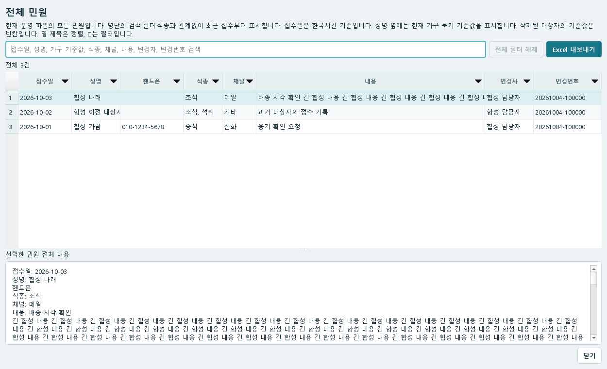
창 최소화·최대화와 크기 기억
열린 작업창의 제목 표시줄에서 최소화·최대화 버튼을 사용할 수 있습니다. 창 가장자리나 모서리를 끌어 크기를 바꾸고 닫으면, 다음에 같은 종류의 창을 열 때 크기와 최대화 상태를 복원합니다. 창의 입력을 취소해도 창 크기는 기억합니다.
창마다 따로 이 PC에 저장하며 운영 DB나 다른 사용자 화면 설정에는 포함하지 않습니다. 모니터가 달라지면 화면 크기를 고려해 복원합니다. 단순 안내·확인 메시지는 내용에 맞는 크기를 사용합니다.
중지 시작일로 식종을 미배송 정리
배포 폴더의 meal_stop_cleanup.exe는 앱과 별도로 실행하는 정리 도구입니다. Python을 설치하지 않아도 사용할 수 있습니다. 공통 백업 설정을 읽을 수 있도록 meal_delivery.exe와 같은 폴더에 두세요. 앱 메뉴에서 여는 기능은 아닙니다.
- 급식 배송 운영 프로그램을 종료하고 meal_stop_cleanup.exe를 실행합니다.
- 찾을 중지 시작일을 입력합니다. 2026-09-30은 해당 연도의 그 날짜만, 9/30은 모든 연도의 같은 월·일을 찾습니다. 다른 날짜도 입력할 수 있으며 빈칸이면 취소합니다.
- 운영 파일 경로와 비밀번호를 입력합니다. 파일을 창에 끌어 놓아 경로를 입력해도 됩니다. 비밀번호는 화면에 표시되지 않습니다.
- 날짜 범위·이름·식종과 되돌릴 변경번호를 확인합니다. 맞으면 정리를 입력합니다. 다른 입력은 취소합니다.
- 저장 결과와 백업 안내를 확인하고 Enter를 눌러 닫습니다. 기존 앱에서 같은 운영 파일을 다시 열어 확인합니다.
다른 사람·식종·별도 작업본과 이전 변경번호의 원본은 유지합니다. 기존 운영 파일에 변경 기록 하나를 추가하며 파일 경로·비밀번호·백업 연결은 그대로입니다. 잘못 정리했다면 앱의 이전 자료로 되돌리기에서 정리 직전 변경번호를 선택하세요. 이미 만든 Excel 파일은 바뀌지 않으므로 필요한 문서는 다시 생성합니다.
같은 운영 파일의 공통 설정을 찾으면 기존 자동 백업 폴더에도 저장합니다. 백업 경로를 찾지 못하거나 백업이 실패하면 정리 저장 여부와 구분해서 안내합니다. 오류가 나면 안내된 원인을 해결한 뒤 다시 실행하세요. 예전 9월30일_중지정리.cmd도 이 날짜 입력 방식으로 연결됩니다.